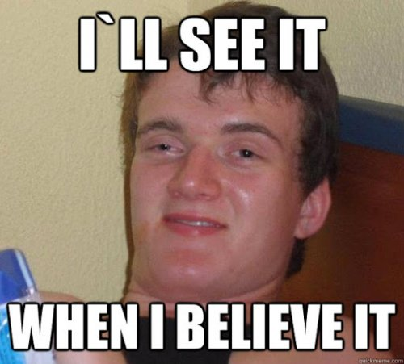
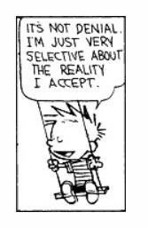

In preparation for writing today’s Tickler, I girded my loins and read a ton of social media posts about what is really going on in the world.
The things I do for you. A shower would be nice right about now.
I learned that the video of George Floyd’s death was actually a staged act, he’s not really dead. I learned that Donald Trump has dementia, neurosyphilis, a stroke, pathological narcissism, and perfect health. I learned that COVID is a hoax, hospitals are empty, no one has died from it. Or millions more than we have been told have dies, but they all got the flu vaccine last year or they didn’t get enough sunshine or they were already sick. I learned the elites are eating the internal organs of children with no anesthetic.
Yes every one of these authors absolutely believes the things they've written.
Key word in that sentence is believe.
Because even though any storyline can be backed up by some expert trotted out to prove that particular point of view, and even though there’s what appears to be unquestionable science for any side…
belief is all anyone’s got.
Because the mind makes stuff up. Right out of nothing, it manufactures nonsense.
And just like in any nightmare, where snakes and Batman fall in love,
in the dream, we believe what it tells us.
Again, key word is believe. Because the only difference between night thoughts and day thoughts is the thought, “This is real.”
"Reality" requires belief.
Which is why it’s not possible to not believe something.
We have to believe the evidence the mind gives; it is all we have. And everything is, by necessity, propaganda for a viewpoint.
This is not negotiable. Otherwise… well, there is no otherwise.
After all, we can’t take in everything- it’s too much. Information has to be narrowed down. So we filter- through our small-world conditioning, our “personal experience,” our selective little blinders- to decrease vastness and funnel it through the sieve of thought into manageable smallness.
We don’t notice the filtering.
We just notice that we need to know where we stand.
Otherwise, if we don't "take a stand" somewhere, we don’t exist anywhere.
Which is bad. Not as bad as having different beliefs, but close.
Existence depends on belief.
So by golly we're going to fight for how we see things. We're going to fight for a point of view.
We're going to get violent in its defense, at the very least rolling our eyes, or hitting the block button on everyone whose filters give them a different set of beliefs.
It’s not enough to have faith in our own nonsensical mind ramblings. No, we insist others believe our beliefs too.
We are willing to kill, and even die, for them.
Which is weird when we think about it. I mean, apparently proving our existence via viewpoint is so important, that we are willing to rage and fight and even lose that very same existence.
For thought. For nothing.
Points of view are a frenzy of me-ness.
And what’s actually true? Who is right?
We will never know. We are not built to know what’s outside our biased filters.
There’s no check for the nightmares of thought running amok, in the dream.
No one’s beliefs can be trusted. Not mine, not some wise teacher’s, not even science. It’s all thought, it's all filtered.
It’s all dependent on believing.
So the only non-kool-ade option is to open to the possibility that we’re missing something. All we can do is can consider that, despite our absolute certainty we’re right, and despite our absolute certainty that our proof does indeed prove something...
we still might not know.
Which can soften certainty a bit. Not completely, of course- a truly open mind is not possible.
But maybe enough.
Since we’re not likely to go to war over a soft certainty.
And I say this knowing it will lose me friends and earn me the block button and/or the opt-out link.
I am quite sure of this.
I've done the research and
I know.
Anyone who thinks otherwise is
Delusional.
Believe me.
Click here to get your every week.
"You will always experience what you believe and nothing else. And this invalidates your experience."
--J. Krishnamurti

